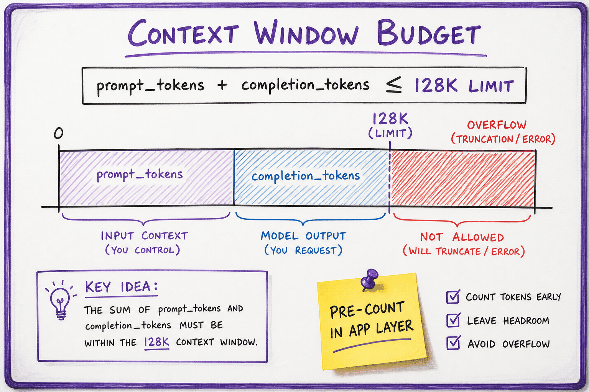

Tokens, context & cost // LLM fundamentals
BPE tokenization, the context window, and what every token costs.
01 — At a glance
BPE and byte-level tokenizers, counting tokens with tiktoken, context budget math, and truncation strategies that prevent silent prompt overflow in production.

Raw text flows through normalization and BPE tokenization into token IDs that share a fixed context budget with the model completion.

Prompt tokens plus completion tokens must fit the context window. Count tokens in the app before the call and leave headroom.
02 — New words
| Word | Meaning |
|---|---|
| Token | One entry in a model's vocabulary: a whole word, part of a word, a run of spaces, a digit group or a byte. Models read, write and bill in tokens. |
| Tokenizer | The fixed program that turns text into token IDs and back. Each model family has its own. |
| BPE (byte-pair encoding) | The common way to build a vocabulary: start from single bytes and repeatedly merge the most frequent adjacent pair into a new token. |
| Vocabulary size | How many distinct tokens the tokenizer has, for example about 100,000. Larger means fewer tokens per text but a bigger embedding table. |
| Context window | The maximum number of tokens, input plus output, that one request can hold. |
| Input / output tokens | Tokens you send (prompt, history, documents) versus tokens the model generates. Priced separately; output usually costs several times more. |
| Prefill / decode | Processing all input tokens in one parallel pass, versus generating output tokens one at a time. |
| TTFT | Time to first token: roughly queueing plus prefill. What a user feels as "it started answering". |
| KV cache | The keys and values stored for every token in the context, so later tokens can attend to them. Grows linearly with context length. |
| Prompt caching | Reusing the stored computation for an identical prompt prefix across requests, billed at a discount and faster. |
| Token budget | A planned allocation of the context window across system prompt, tools, history, retrieved text and output. |
| BPE | Byte-pair encoding — merge frequent pairs to build the token vocabulary. |
Quick reference
03 — What & Why
LLMs operate on token IDs, not characters. Tokenization determines cost, latency, context fit, and whether your prompt silently truncates. Mis-counting tokens is a top production bug.
Context limits and KV memory are covered in Inference internals; this sheet is getting text into IDs safely.
04 — Core Concepts
| Term | Definition | Gotcha |
|---|---|---|
| BPE | Byte-Pair Encoding merges frequent pairs | Vocab 50K–200K typical |
| Byte-level | UTF-8 bytes as base alphabet | No UNK for rare Unicode |
| Context window | Max prompt + completion tokens | Shared budget, not prompt-only |
| tiktoken | OpenAI-compatible fast BPE counter | Model-specific encodings |
| Special tokens | <|im_start|>, <|endoftext|>, tool markers | Counted in budget |
05 — API Surface
import tiktoken
enc = tiktoken.encoding_for_model("gpt-4o")
tokens = enc.encode("Hello, world!")
print(len(tokens)) # billable count
text = enc.decode(tokens[:50]) # partial decode
# HuggingFace
tokenizer = AutoTokenizer.from_pretrained("meta-llama/Llama-3-8B")
ids = tokenizer("Hello", add_special_tokens=True)["input_ids"]06 — When to Use / When NOT
| Strategy | Use When | Skip When |
|---|---|---|
| Pre-count in app | Every user-facing feature | Never skip in prod |
| Summarize history | Long chat threads | Single-shot Q&A |
| RAG chunks | Large corpora | Whole doc fits in window |
| Char-based limits | Quick UI estimate only | Billing or hard limits |
07 — Architecture
User text -> Unicode normalize -> BPE merge table -> token IDs
-> budget check (prompt + max_completion <= limit)
-> truncate | summarize | retrieve | reject08 — Deep Dive: BPE Tokenization

BPE iteratively merges frequent byte or character pairs into subword vocabulary entries.
Start with byte/char vocab; merge most frequent adjacent pairs until vocab size reached. Common words become single tokens; rare words split into subwords. GPT-4 uses cl100k_base; Llama 3 uses its own SentencePiece table.
09 — Deep Dive: Counting & Budgeting
def fits(prompt_ids: list[int], max_out: int, limit: int) -> bool:
return len(prompt_ids) + max_out <= limit
# Always reserve completion headroom
PROMPT_BUDGET = 120_000 # for 128K model with 8K outputRule: ~4 characters per token for English (rough). Code and JSON are denser. Always count with the same tokenizer as the model.
10 — Deep Dive: Truncation Strategies

Head, tail, middle-out, and summarize-then-inject strategies for fitting context budget.
- Head: keep system + recent user (drops old history)
- Middle-out: keep start + end of long docs
- Summarize: LLM compresses old turns
- RAG: retrieve top-k chunks instead of full doc
11 — Deep Dive: Special Tokens
Chat templates insert role markers (<|im_start|>user). Tool calls add JSON blobs. Each counts toward budget. Use tokenizer.apply_chat_template for exact counts.
12 — Deep Dive: Multilingual & Code
Non-Latin scripts often use more tokens per character. Code tokenizes densely (symbols are separate tokens). Budget 1.5–2× for CJK vs English prose.
The full explanation
13 — The question
A model never sees characters or words. Text is cut into tokens by a fixed tokenizer, and from then on everything is counted in tokens: what fits in the context window, how long the model takes, how much memory the server needs, and what you pay. Tokens are the unit of an LLM application's capacity planning, in the way requests per second and bytes are for a web service.
Interviewers ask:
- How does BPE tokenization work, and why do models struggle to count letters or do arithmetic on long numbers?
- What fills the context window in a real request, and what happens as a conversation grows?
- Estimate the cost and latency of this feature at this traffic. Which tokens dominate each?
- If the model supports a million tokens of context, why not put everything in it?
The running example is one request to Acme Cloud's support assistant, a retrieval-augmented chat: a 600-token system prompt with the support rules, 400 tokens of tool definitions (billing lookup, refund, escalate), five retrieved help-centre chunks of 400 tokens each, the conversation so far, a 40-token user question, and a 250-token answer. We will tokenize pieces of it with a real tokenizer (OpenAI's cl100k_base, about 100,000 tokens), then budget, cost and time the whole request. Prices are illustrative: $3 per million input tokens, $15 per million output tokens, and $0.30 per million cached input tokens, typical of a mid-sized hosted model and not any specific provider's list price.
14 — Step 1: why tokens, not characters or words
Models need a fixed vocabulary, because the output layer produces one score per vocabulary entry. The choice of unit is a trade-off:
- Characters (or bytes): a tiny vocabulary and nothing is ever unknown, but sequences are about 4 times longer, and attention and generation cost grow with sequence length. Each character also carries little meaning, so the model must spend layers assembling words.
- Whole words: short sequences, but the vocabulary explodes (every name, typo, product code and inflection), and any word not in it becomes "unknown".
- Subwords: frequent words are single tokens, rare words are spelled from a few pieces, and anything at all can fall back to bytes. Short sequences and nothing unknown. Every major LLM uses this.
With cl100k_base, the sentence "Refunds are available within 30 days of purchase." is 49 characters and 11 tokens: Ref, unds, are, available, within, , 30, days, of, purchase, .. That is 4.45 characters per token. Notice that tokens usually carry their leading space, that a capitalised word at the start of a sentence can split differently from the same word mid-sentence, and that "30" got its own token with a separate space before it.
15 — Step 2: how BPE builds the vocabulary
Byte-pair encoding learns the vocabulary from a training corpus with one rule, applied thousands of times: find the most frequent pair of adjacent symbols and merge it into a new symbol. Start with every word spelled as characters plus an end-of-word marker _. On a toy corpus of support words (refund ×3, refunds, refunded, refunding, fund, funds, funded, invoice, invoices), 83 symbols to begin with:
| Merge | Pair merged | Times it occurred | Total symbols after |
|---|---|---|---|
| 1 | f + u | 9 | 74 |
| 2 | fu + n | 9 | 65 |
| 3 | fun + d | 9 | 56 |
| 4 | r + e | 6 | 50 |
| 5 | re + fund | 6 | 44 |
| 6 | refund + _ | 3 | 41 |
| 7 | s + _ | 3 | 38 |
| 8 | i + n | 3 | 35 |
After eight merges, "refund" is one token, "refunds" is refund s_, "refunding" is refund in g _, and "invoice" is still mostly letters because it was rarer. A real tokenizer runs this on a huge multilingual corpus until the vocabulary reaches its target size (100,000 merges or so), starting from the 256 possible bytes so that any input, including emoji and binary junk, can be encoded. Encoding new text replays the learned merges in order. Before merging, text is split by a pattern into chunks (words, numbers, punctuation, whitespace) so merges never cross those boundaries; that is why "30" and the space before it are separate tokens above.
Two consequences follow directly. Frequency decides everything: what was common in the tokenizer's training corpus becomes cheap, what was rare stays expensive. And the vocabulary is frozen once training starts: the model's embedding table has one row per token, so changing the tokenizer means retraining the model.
16 — Step 3: what different text costs
The same tokenizer on different kinds of text, all counted with cl100k_base:
| Text | Characters | Tokens | Characters per token |
|---|---|---|---|
| English sentence (the refund policy) | 49 | 11 | 4.45 |
Python, two lines: def refund(order): then an indented return order.amount * 0.9 | 48 | 13 | 3.69 |
| JSON order record | 62 | 25 | 2.48 |
| "Order 1234567 was charged $1,049.99" | 35 | 13 | 2.69 |
| A UUID | 36 | 35 | 1.03 |
| The refund sentence in Japanese | 17 | 16 | 1.06 |
| The refund sentence in Hindi | 34 | 35 | 0.97 |
Meaning per token varies far more than characters per token suggests. The Hindi sentence says what the English one says in 35 tokens instead of 11, so it costs about 3.2 times as much, uses 3.2 times as much context and takes longer to generate. The Japanese version costs about 1.5 times as much. Scripts that were rare in the tokenizer's training data fall back to multi-byte pieces (many Devanagari characters take two tokens each, and vowel signs are separate tokens). Newer tokenizers with larger vocabularies narrow this gap, but for multilingual products you should measure token counts per language before quoting a price.
Machine-ish strings are expensive too. A UUID is almost one token per character, so a prompt full of IDs, hashes or base64 burns budget fast; JSON spends tokens on quotes, braces and keys. When you control the format, use short keys, drop unneeded IDs, and prefer compact formats for data you put in prompts.
17 — Step 4: the strange failures tokenization explains
The model sees token IDs, not letters, which explains a family of failures that look like stupidity:
- Spelling and counting letters. "strawberry" is
str,aw,berry; with a leading space it is the single tokenstrawberry. To count its r's the model must have learned the spelling of each token, information that is never directly visible to it. It often has, imperfectly. - Arithmetic on long numbers. "12345 + 67890" becomes
123,45,+,678,90. The digits are grouped in threes from the left, so place value is not aligned between the two numbers. "9.11 > 9.9" splits the decimals into11and9, which invites comparing 11 with 9. Give the model a calculator tool for anything that matters. - Case and spacing sensitivity. "refund", " refund", "Refund" and "REFUND" can be four different token sequences (
REFUNDisREF,UND). Text that looks the same to a person can look quite different to the model, which matters for exact-match instructions and for caching. - Prompt boundaries. If a prompt ends with a trailing space, the model must start its answer with a token that has no leading space, which is unusual for a word; output quality can dip. End prompts cleanly.
19 — Step 6: what a request costs
Cost is input tokens times the input price plus output tokens times the output price. For Acme's first turn:
\[ 3{,}040 \times \frac{\$3}{10^6} + 250 \times \frac{\$15}{10^6} = \$0.00912 + \$0.00375 = \$0.01287 \]Output is 7.6% of the tokens but 29% of the cost, because each output token is priced at five times an input token here. At 1 million first-turn requests a month, that is about $12,900. A full 20-turn conversation costs $0.42, against $0.26 for 20 independent single-turn requests: history adds 64%.
Why are output tokens dearer? Prefill processes all input tokens in one parallel pass, which keeps the GPU's arithmetic units busy. Decode generates one token per forward pass, and each pass must read all the model's weights from memory for a single token per sequence, so the GPU spends most of its time waiting on memory (Inference internals). A second of GPU time yields far fewer output tokens than input tokens.
The levers, in rough order of impact for a request shaped like this one:
- Fewer retrieved tokens. Retrieval is two thirds of the input. Three better chunks (after reranking, Reranking) instead of five mediocre ones save 800 tokens, nearly 19% of the cost of a turn, and often improve answers.
- Shorter outputs. Ask for concise answers and set
max_tokens; every output token saved is worth five input tokens. - Prompt caching for the stable prefix (Step 8).
- A smaller model for easy turns, routing only hard ones to the large model (Cost & performance).
20 — Step 7: what a request takes in time
Latency has the same two phases. With illustrative throughput figures for a mid-sized hosted model (prefill around 5,000 tokens per second for one request, decode around 60 tokens per second; real numbers vary a lot by model, hardware and load):
- Time to first token ≈ queueing + prefill: \(3{,}040 / 5{,}000 \approx 0.6\) s.
- Generation: \(250 / 60 \approx 4.2\) s.
The answer, not the prompt, dominates wall-clock time, so halving the answer length cuts total latency far more than halving the retrieved context does. Streaming hides most of it: the user sees text after 0.6 s and reads while the rest arrives. For non-streamed calls inside an agent loop, where the next step waits for the whole output, output length is the latency budget. Reasoning models, which generate thousands of hidden thinking tokens before answering, move both TTFT and cost sharply upward for the same visible answer.
21 — Step 8: memory per token, and why prompt caching works
On the server, every token in the context occupies KV cache memory for as long as the request runs. From Transformers, Step 5: about 0.52 MB per token for a 7B model with full multi-head attention, 0.33 MB for a 70B model with grouped-query attention. Acme's 3,290-token request therefore pins about 1.7 GB (7B) or 1.1 GB (70B) of GPU memory while it runs. Long contexts reduce how many requests a GPU can serve at once, which is one reason providers charge more beyond a length threshold and why a long-context request is slower even for a short answer.
Prompt caching exploits the fact that the KV cache for a prefix depends only on that prefix. If many requests start with the same tokens, the server can keep their keys and values and skip recomputing them, so cached input is billed at a fraction of the normal price (here 10%) and TTFT falls. Caching only matches an identical prefix, token for token. That dictates prompt order: put stable content first (system prompt, tool definitions), then content that only grows (history), and per-request content last (retrieved chunks, the question). With that order, the system prompt, tools and all but the newest exchange of history are cached from turn 2 on. (The newest question and answer are not: in the previous request the question sat after that turn's retrieved chunks, so those tokens are not part of any earlier prefix.) Only the retrieved chunks, the latest exchange and the new question are billed at the full rate, and the 20-turn conversation drops from $0.42 to $0.24, a 44% saving. Put a timestamp or the user's name at the top of the system prompt and the cache never hits.
22 — Step 9: a bigger window is not a better prompt
Models now accept hundreds of thousands to millions of tokens. Filling them is rarely the right design, for four reasons:
- Cost and latency scale with input. A 200,000-token prompt at $3 per million is $0.60 per request before any output, and prefill takes tens of seconds.
- Attention is not uniform. Many models use information at the start and end of a long context more reliably than information buried in the middle ("lost in the middle"). Accuracy on a fact can depend on where it sits.
- Distractors hurt. Irrelevant but similar passages (last year's refund policy next to this year's) increase wrong answers. More context is more chances to be misled.
- Effective context is shorter than advertised. A model may accept 1M tokens but reason reliably over far less. Test on your task at the lengths you plan to use.
So retrieval stays the default for large corpora: pick the few hundred or few thousand tokens that matter. Long context is excellent for single large artefacts that must be read whole (a contract, a codebase module, a long transcript) and as a fallback when retrieval is unsure.
23 — Budgeting and estimating: a recipe
- Measure, do not guess. Count tokens with the target model's tokenizer (or the provider's token-counting endpoint) on real samples, per language and content type. "4 characters per token" holds only for English prose.
- Write the budget like Step 5's table: fixed parts, growing parts, per-request parts, reserved output. Set a cap for each growing part.
- Enforce it in code before every call: if over budget, drop the oldest history turns first (or summarise them), then the lowest-ranked retrieved chunks; never silently truncate the system prompt or the question.
- Order for caching: stable, then growing, then per-request.
- Estimate cost per request and per conversation, at expected and peak volumes, with output priced separately. Include retries, tool-call round trips (each one is another request with the whole context), and judge calls in evals.
- Log actual usage: the API returns input, output and cached token counts per call. Alert on drift, because prompts grow over time as people add instructions.
24 — In code: count, budget and price a request
import tiktoken enc = tiktoken.get_encoding("cl100k_base") for text in ["Refunds are available within 30 days of purchase.", "3f2b9c1e-7a4d-4e8b-9c2f-1a6d5e7b8c90", "रिफंड 30 दिनों के भीतर उपलब्ध हैं।"]: ids = enc.encode(text) print(f"{len(text):3d} chars -> {len(ids):3d} tokens {text[:30]!r}") PRICE_IN, PRICE_OUT, PRICE_CACHED = 3 / 1e6, 15 / 1e6, 0.30 / 1e6 # illustrative $/token SYSTEM, TOOLS, RETRIEVED, QUESTION, ANSWER, PER_TURN = 600, 400, 2000, 40, 250, 290 def turn_cost(turn, caching): history = PER_TURN * (turn - 1) total_in = SYSTEM + TOOLS + history + RETRIEVED + QUESTION # cache hit = longest prefix identical to the previous request: system, tools and all # history except the newest exchange (last turn's question sat after its retrieved chunks) cached = (SYSTEM + TOOLS + PER_TURN * (turn - 2)) if (caching and turn > 1) else 0 return total_in, cached * PRICE_CACHED + (total_in - cached) * PRICE_IN + ANSWER * PRICE_OUT tokens, cost = turn_cost(1, caching=False) print(f"turn 1: {tokens} input tokens, ${cost:.5f}; per 1M requests ${cost * 1e6:,.0f}") for caching in (False, True): total = sum(turn_cost(t, caching)[1] for t in range(1, 21)) print(f"20-turn conversation, caching={caching}: ${total:.3f}")
It prints 49 characters → 11 tokens, 36 → 35 and 34 → 35 for the three strings, then 3,040 input tokens and $0.01287 for turn 1 ($12,870 per million requests), and $0.423 versus $0.238 for the 20-turn conversation without and with caching. And the BPE merge loop from Step 2, which runs anywhere:
from collections import Counter corpus = "refund refunds refunded refunding fund funds funded invoice invoices refund refund".split() words = Counter(tuple(w) + ("_",) for w in corpus) # characters + end-of-word marker def merge(words, pair): out = Counter() for w, n in words.items(): new, i = [], 0 while i < len(w): if i + 1 < len(w) and (w[i], w[i + 1]) == pair: new.append(w[i] + w[i + 1]); i += 2 else: new.append(w[i]); i += 1 out[tuple(new)] += n return out for step in range(1, 9): pairs = Counter() for w, n in words.items(): for a, b in zip(w, w[1:]): pairs[(a, b)] += n best, count = pairs.most_common(1)[0] # most frequent adjacent pair words = merge(words, best) print(step, "+".join(best), count, sum(len(w) * n for w, n in words.items())) print([" ".join(w) for w in words])
25 — Tokenization (BPE)
Models work on integer token ids. Characters make sequences too long; whole words make vocabularies infinite. Byte-pair encoding sits between:
- Start from bytes (256 symbols).
- Count adjacent pairs in a corpus; merge the most frequent pair into a new token.
- Repeat until vocabulary reaches the target (GPT-2: 50,257; Llama 3: 128k; Qwen2.5: ~152k).
Common words become one token, rare words several pieces, and any string is representable (byte fallback). English averages ~4 characters/token; code and non-Latin scripts cost more tokens.
Trap
many "LLMs can't do X" failures are tokenization: counting letters in "strawberry", arithmetic on multi-digit numbers split oddly, trailing-space differences. Always look at the tokens.26 — The context window & what it costs
The single most important constraint in everything you'll build: the model can only "see" a limited amount of text at once.
27 — What the window holds
The context window is the maximum number of tokens the model can process in one call. Everything must fit inside it:
┌──────────────── CONTEXT WINDOW (e.g. 200,000 tokens) ─────────────────┐ │ system prompt │ tool definitions │ conversation history │ retrieved docs │ ← input │ + room for OUTPUT │ └────────────────────────────────────────────────────────────────────────┘
If you exceed it, the call fails with a 400 — you must drop or summarize something. 200,000 tokens sounds enormous (~500 pages), and for a toy it is. But budget a real agent: a serious system prompt (2,000 tokens) + 20 tool definitions (8,000) + a 30-turn conversation where turns average 600 tokens (18,000) + five retrieved documents (15,000) + room for a 4,000-token answer — you've committed 47,000 tokens before anything goes wrong, and agents routinely stuff tool results (a 50,000-token log file, say) into history too. Windows fill much faster than intuition suggests.
"Lost in the middle": bigger isn't better
As the window fills, models also get worse at using it — and not uniformly. Empirically, retrieval accuracy over long contexts is U-shaped: information at the beginning and end of the context is recalled well; information buried in the middle is missed far more often ("lost in the middle," a.k.a. context rot). The mechanism is a training artifact: documents in pre-training put key information at openings and conclusions, and attention learns those habits. Practical consequences:
- Position matters. Put instructions at the start, the question/task restated at the end, and never bury the critical fact in the middle of 80,000 tokens of filler.
- Order retrieved documents by importance — most relevant first or last, not in whatever order the database returned them.
- Retrieve tightly. Five relevant paragraphs beat fifty maybe-relevant pages, on both accuracy and cost. "Stuff the whole corpus in, the window is big" is how you get slower, pricier, wronger answers all at once.
- Mitigate structurally: chunk + summarize long inputs, ask the model to first quote the passages it will rely on (forces attention to find them), or split the task across multiple focused calls instead of one bloated one.
28 — How pricing works
You pay per token, with input and output priced separately (output is usually pricier — recall from Calling a model that each output token is a full forward pass). A call's cost ≈ (input_tokens × in_price) + (output_tokens × out_price). Two big consequences:
- Long histories/RAG context make every turn more expensive (you resend it all).
- Prompt caching (Tools & agents) can make repeated input ~90% cheaper — a major lever.
Worked cost arithmetic: three app archetypes
Let's price three realistic apps end to end. All prices are illustrative — assume $3 per million input tokens and $15 per million output tokens for a mid-tier model; the method is what transfers, plug in current prices when you build.
| Archetype | Tokens per call (in / out) | Calls per interaction | Volume per day | Cost per day |
|---|---|---|---|---|
| Chatbot (support assistant, 8-turn avg conversation) | avg ~2,600 in (system 800 + growing history) / 250 out per turn | 8 turns | 1,000 conversations | 8,000 calls × (2,600×$3 + 250×$15)/1M ≈ $92/day |
| RAG app (Q&A over docs, single-shot) | ~7,300 in (system 500 + 6 chunks×1,100 + question 200) / 400 out | 1 answer call (+ cheap embedding, ~$0.02/day, negligible) | 5,000 questions | 5,000 × (7,300×$3 + 400×$15)/1M ≈ $140/day |
| Agent (multi-step tool use) | grows per step: ~4k → 30k in across 12 steps (avg ~15,000 in) / 500 out per step | 12 model calls per task | 500 tasks | 6,000 × (15,000×$3 + 500×$15)/1M ≈ $315/day |
Read the table twice and three lessons pop out. (1) Input dominates. In the chatbot, output tokens are ~250×$15 = $0.00375/turn while input is $0.0078 — and the ratio worsens as history grows; in the agent, input is ~85% of spend. (2) Agents multiply everything. Twelve calls per task, each resending the growing transcript — an agent task costs ~50× a single RAG answer here ($0.63 vs $0.028). (3) The levers are input-side: prompt caching (repeated system prompt + tools at ~90% off could cut the agent bill roughly in half), tighter retrieval, history compaction, and picking a cheaper model for the boring calls. Nobody ever saved real money by trimming answer length alone.
29 — Budgeting the window in code
Count tokens before you call — to predict cost, and to fail gracefully instead of getting a 400. Here's a small context-budget helper you'll reuse constantly:
import tiktoken ENC = tiktoken.get_encoding("o200k_base") # ~few % off for non-OpenAI models: fine for budgeting def ntokens(text: str) -> int: return len(ENC.encode(text)) def estimate_cost(input_toks, output_toks, in_per_mtok=3.0, out_per_mtok=15.0): """Illustrative prices; pass your provider's real ones.""" return (input_toks * in_per_mtok + output_toks * out_per_mtok) / 1_000_000 def build_context(system: str, history: list[dict], docs: list[str], question: str, window=200_000, max_output=2_000, safety_margin=1_000) -> dict: """Assemble a request that is guaranteed to fit, trimming lowest-value parts first.""" budget = window - max_output - safety_margin fixed = ntokens(system) + ntokens(question) if fixed > budget: raise ValueError(f"system+question alone is {fixed} tokens > {budget} budget") # Priority order: question > system > docs (most relevant first) > oldest history. remaining = budget - fixed kept_docs = [] for d in docs: # docs arrive sorted by relevance t = ntokens(d) if t <= remaining: kept_docs.append(d); remaining -= t # else: skip — a truncated chunk is often worse than a dropped one kept_history = [] for msg in reversed(history): # newest turns are most valuable t = ntokens(msg["content"]) + 8 # ~8 tokens/message of role overhead if t > remaining: break kept_history.insert(0, msg); remaining -= t input_toks = budget - remaining + max_output # worst-case bill for this call print(f"[budget] docs kept {len(kept_docs)}/{len(docs)}, " f"history kept {len(kept_history)}/{len(history)}, " f"est. max cost ${estimate_cost(budget - remaining, max_output):.4f}") return {"system": system, "messages": kept_history, "docs": kept_docs, "question": question}
Note the design choices, because they're the craft: trim whole documents rather than truncating mid-chunk; drop oldest history first; always reserve output room plus a safety margin (token counts across tokenizers drift a few percent — the margin absorbs it). And note the "lost in the middle" corollary baked into ordering: keep the best docs, and place them adjacent to the question.
Mini-scenario: the "just increase the context" trap
Your legal-tech team ships contract Q&A using RAG with 5 retrieved clauses. A PM suggests: "the model has a 200k window — skip retrieval, send the whole 120k-token contract every question, simpler and nothing gets missed." You try it. Three things happen. Latency triples (the model must process 120k tokens per call). Cost per question goes from ~$0.03 to ~$0.36 (illustrative: 120k×$3/M vs 10k×$3/M, both +output) — at 5,000 questions/day that's $150/day becoming $1,800/day. And accuracy drops on clause-specific questions, because the answer for "what's the termination notice period?" lives on page 47 — the middle of the context — and now competes with 119k tokens of noise. The team lands where this topic points: tight retrieval, relevant clauses ordered by score, question restated at the end, prompt caching for the fixed preamble. Bigger windows are a capability, not a strategy.
Estimate before you build
Count tokens with a tokenizer (e.g.tiktoken) to predict cost and check you fit the window. A page of text ≈ 500 tokens; this topic ≈ 2,500 tokens; a novel ≈ 150,000. Do the arithmetic in the archetype table for your app on day one — a spreadsheet with four cells (tokens in, tokens out, calls/day, price) has killed more bad architectures than any code review.Window & cost gotchas
- The window includes your output. A 200k window with 199k of input leaves 1k for the answer — the model stops mid-sentence with
stop_reason="max_tokens", or the request is rejected outright. - Tool definitions and tool results count. Agents' contexts are mostly their own tool traffic; one verbose tool result (a raw stack trace dump, a full API response) can eat 30k tokens silently.
- Tokenizer mismatch: budgeting Claude calls with
tiktokenis fine at a few percent error — but only if you left the safety margin. Trust the provider'susageobject for billing truth. - Cost grows quadratically with conversation length in naive chat: turn N resends ~N turns of history, so total spend across a conversation scales like N². Compaction (Tools & agents) is what breaks the curve.
- Advertised window ≠ usable window. Quality degrades well before the hard limit on many models; run a needle-in-haystack test at your target fill level before betting the product on it.
Takeaway
The context window is your RAM and your budget. Everything — system prompt, tools, history, retrieved docs, the answer — shares one pool of tokens; input volume drives most of the bill; and the middle of a full window is the model's blind spot. Deciding what goes into it each turn is the core craft of context engineering (Tools & agents).Exercises
- Redo the three-archetype cost table for your own idea: estimate tokens per call from real sample prompts (count them with
tiktoken), pick a daily volume, and compute $/day at two different models' prices. Which term dominates? - Extend
context_budget.pyto also return the positions of kept docs and reorder them best-first and best-last (sandwich order). Verify with token counts that the question always ends the prompt. - Run a needle-in-a-haystack test: hide the sentence "The vault code is 7391." at 10%, 50%, and 90% depth inside ~50k tokens of filler text and ask for the vault code (5 trials each). Tabulate recall by position.
- Take a 20-turn chat log and compute (a) total input tokens paid across the conversation as-is, (b) the same if history beyond the last 6 turns is replaced by a 150-token summary. What's the saving at $3/M input?
- Instrument any app from earlier topics to log
usageper call into a CSV, then produce one chart: cumulative cost vs. time, split into input vs. output spend. Confirm which side dominates.
In production
30 — Production & Ops
- Reject or trim before API call — avoid 400 context errors
- Log token counts per request for cost dashboards
- Version tokenizer with model deployment
- See Cost & latency for $/token impact
32 — Where people get lost
- Char-length limits instead of token counts
- Forgetting completion tokens in budget
- Wrong tokenizer for model version
- Silent API truncation without warning
- Not counting tool/schema overhead
- "A token is a word" or "4 characters per token". True only for English prose. Code, JSON, numbers, IDs and many languages use far more tokens per character. Measure with the real tokenizer.
- Counting tokens with the wrong tokenizer. Different model families tokenize differently; a budget computed with one can be noticeably off for another, most of all for code and non-English text.
- Pricing only input tokens. Output tokens are fewer but several times dearer, and they dominate latency.
- Forgetting history growth. Every turn re-sends the conversation; total tokens grow quadratically with turns unless history is trimmed or summarised.
- Breaking the cache with a dynamic prefix. A timestamp or user ID at the top of the system prompt makes every prefix unique. Stable content first.
- "Bigger context window, so skip retrieval." Cost, latency, distractors and weaker use of mid-context information all argue for retrieving the few tokens that matter.
- Not reserving output space. A prompt that fills the window leaves no room to answer; check the finish reason for
length. - Blaming the model for letter-counting and long arithmetic. It sees tokens, not characters or aligned digits. Use tools for exact string and number work.
33 — How this connects
Builds on
- What an LLM is — A next-token predictor, the language-modeling objective, model families and scaling laws.
- Transformers & attention — Embeddings, attention, multi-head and GQA, RoPE, the block, a mini-GPT, FLOPs and FlashAttention.
Where this shows up later
- Calling a model — The API call end to end: messages, roles, streaming, tool calls, errors and retries, across providers.
- Limits & hallucination — What LLMs get wrong by design, grounding and abstention, and how to design around it.
- What an agent is — Agents vs agentic AI, what makes something an agent, workflows vs agents, and agent architectures.
- Inference internals — Prefill vs decode, the KV cache, PagedAttention, continuous batching and speculative decoding.
- Cost & latency — Where the money and the milliseconds go: pricing, prefill vs decode, routing, batching and prompt caching.
34 — Check yourself
A feature sends 1,200 input tokens and receives 400 output tokens per call, 2 million calls a month, at $3 / $15 per million. What is the monthly cost, and which single change saves the most?
Why does the Hindi version of the refund sentence cost about three times the English one?
Your prompt is: system prompt, then the current date and time, then tool definitions, history, retrieved chunks, question. Prompt caching shows a 0% hit rate. Why, and what is the fix?
A model has a 128k window. Your system prompt and tools are 3k tokens, you allow 4k for the answer, and each retrieved chunk is 500 tokens. History is capped at 20k. How many chunks can you include at most, and should you?
Estimate time to first token and total time for a 12,000-token prompt with an 800-token answer, at 5,000 tokens/s prefill and 50 tokens/s decode. Where would you optimise?
Why can "12345 + 67890" trip up a model that handles "12 + 67" perfectly?
123, 45 and 678, 90), so the digits of equal place value are not aligned across the two numbers, and carries cross token boundaries. Small numbers are single tokens the model has seen in countless sums.